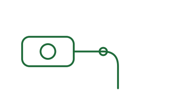
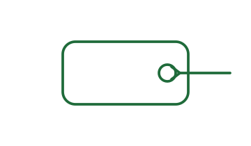
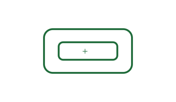

Demoveiledning. Ikke fra produsenten.
Core-modellene bruker magnetisk ladekabel for H/HF og P Core. MH-kabelen passer ikke.
Du trenger: Magnetisk ladekabel for Core-serien, USB-lader
Bruk «Ladekabel USB/magnetisk lading H/HF og P Core». Kabelen for MH-serien passer ikke Core.

Hold magneten mot ladepunktet bak på batteriboksen. Lampen lyser rødt under lading og grønt når den er full.

Åpne batterilokket, ta ut 21700-cellen og sett inn ny med pluss mot merket. Bruk Ledlenser Batteri 21700 for H7R Core.
